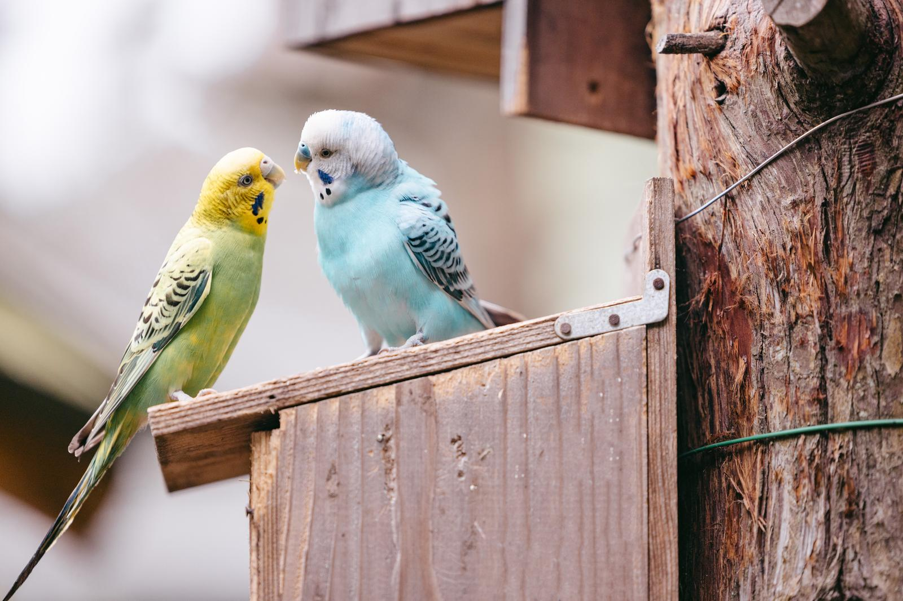
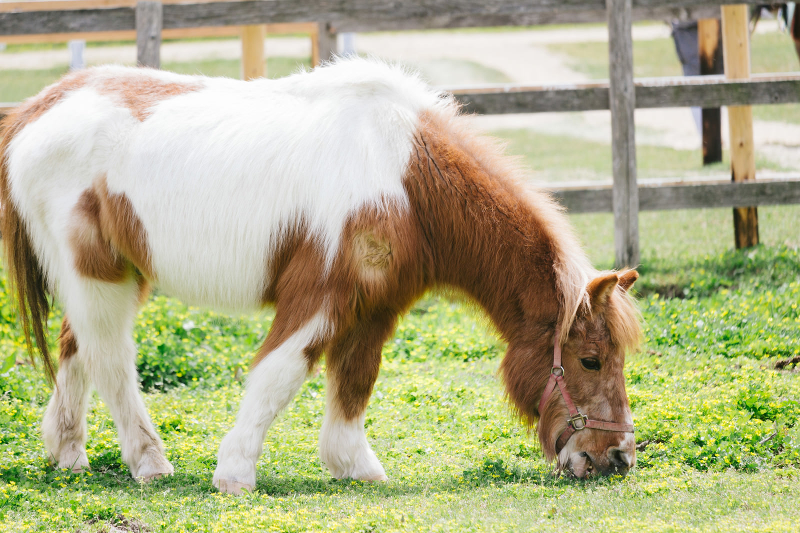

Hint1
The background color of the main content is burlywood
The font for the header and the h2 in the flex items uses Google Fonts' Dosis (Medium 500) (the link tag has already been implemented, so only CSS settings are needed).
Hint2
The CSS property applied when hovering the mouse cursor over the flex item is opacity: 0.8.

Hint3
The flex items and the images inside the items have border-radius: 0.3rem applied.
Hint4
When the browser width is 768px or less, the flex items in the main content are changed from row to column.

Hint5
When the browser width is 500px or less, the navigation is changed to column.
Hint6
The width of the flex item when the browser width is 768px or more is 32%, and when the width is 768px or less, it is set to 100%.